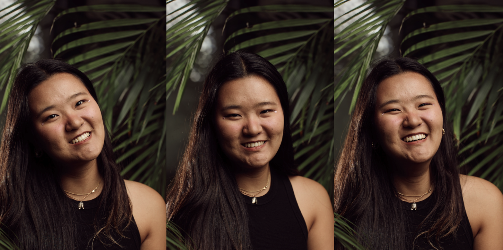

I am Ren Tianle, 任恬乐, and my friends also call me lele(乐乐).
The world is like a playground to me, and I am here solely for the experience.
I will forever want to see the world a little bit more, experience more, share more moments
and build deeper connections with people, fully aware that some of them will lead to
heartbreak eventually.
I am very grateful for everyone who has shown up in my life, so I built this site to share
some love.
By no means moments can be relived, but some smart and compassionate people created camera.
I try to keep the moments as vivid as they are in my memory.
Oh and, I'm bad at using digital cameras for such purpose, so most of the photos on this
site are by film.
They were developed and digitalised with the help of many people and film labs all around
the world, thus quality varies, but that's not important.
I like stories in general, or you can say I live for stories, so I write about them.
My own stories, stories I've heard, stories I've been part of, stories that might be
unknown......
For writing efficiency and more authentic expressions, about 60% of my writings are in my
one and only mother tongue, Chinese.
I've promised many people that I will get the rest translated "soon", however it's still
an ongoing progress.
But before that, I won't get tired of telling the stories in person again and again, if
you'd like to listen.
I love creating and building interesting toys using what I've learnt in technology field, so here I will present some projects that I am pround of.
I do Scuba Dive, Freedive, and a bit of Technical Dive. So many important people in my life
now were met through diving.
Diving, together with the beautiful Gulf of Thailand, healed me mentally countless times.
I'd love to share what I know about diving, some information that might not be so easily
found
elsewhere online.